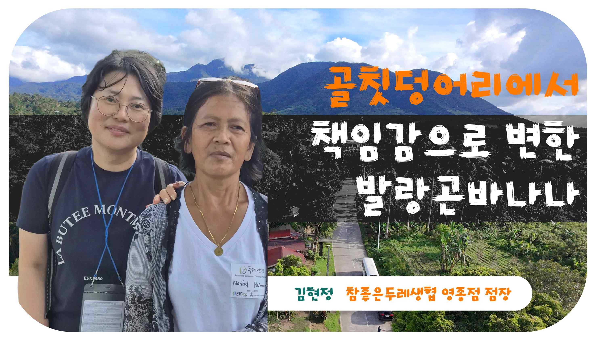
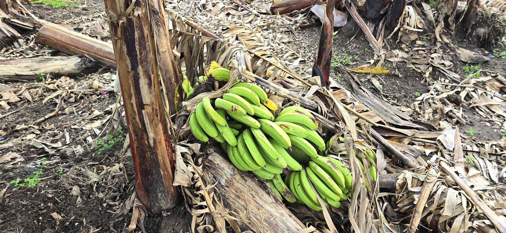
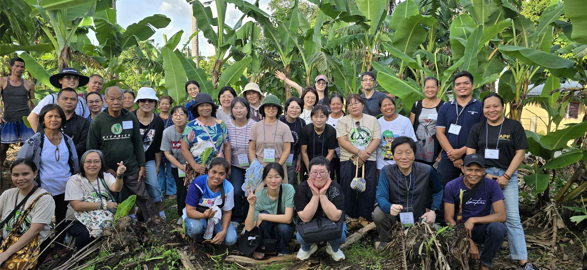
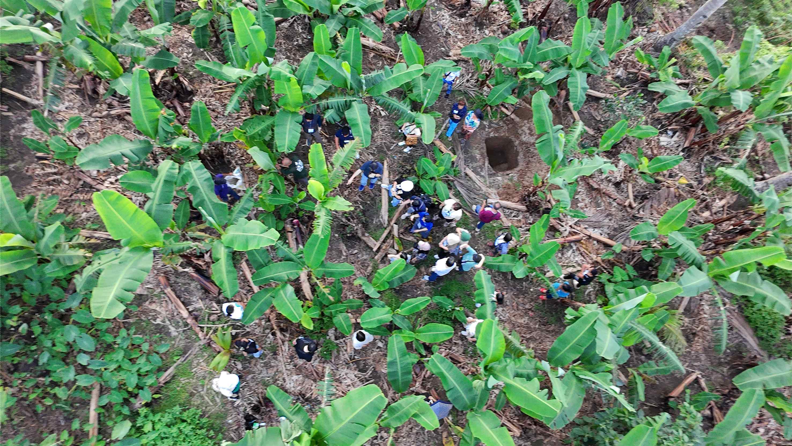

2025.12.7(일) ~ 12.11(목)
4박 5일
참가자 17명
Dec 7-11, 2025
5 Days / 4 Nights
17 Participants
Dis 7-11, 2025
5 ka Adlaw / 4 ka Gab-i
17 ka Partisipante
2025년 12월 7일부터 11일까지, 4박 5일간 17명의 참가자가 필리핀을 방문하여 민중교역의 현장을 직접 체험하였습니다.
From December 7-11, 2025, 17 participants visited the Philippines for 5 days and 4 nights to experience People's Trade firsthand.
Halin sa Disyembre 7-11, 2025, 17 ka partisipante ang nagbisita sa Pilipinas sa sulod sang 5 ka adlaw kag 4 ka gab-i para maeksperensyahan ang Kalakal sang Pumuluyo.
발랑곤 바나나와 마스코바도 설탕의 생산지를 방문하여 생산자들과 교류하고, 민중교역의 가치와 의미를 되새기는 시간을 가졌습니다.
We visited the production sites of Balangon bananas and Mascobado sugar, exchanged with producers, and reflected on the values of People's Trade.
Nagbisita kami sa mga lugar nga nagaprodyus sang Balangon banana kag Mascobado nga asukal, nakigbahin sa mga mangunguma, kag nagpamalandong sa mga bili sang Kalakal sang Pumuluyo.
인천 → 마닐라 → 바콜로드
Incheon → Manila → Bacolod
Incheon → Manila → Bacolod
ATPI 사무소 및 사탕수수 농장 방문
ATPI office and sugarcane farm visit
Opisina sang ATPI kag tubuhan
바나나 산지 방문 및 민중교역 포럼
Banana farm visit and People's Trade forum
Pagbisita sa tanaman sang saging kag forum
생산자 조직 방문 및 ATPI 본부
Producer organization visit and ATPI HQ
Pagbisita sa organisasyon sang prodyuser
바콜로드 → 마닐라 → 인천
Bacolod → Manila → Incheon
Bacolod → Manila → Incheon
Alter Trade Philippines, Inc.
1980년대 사탕수수 가격 폭락으로 많은 농민들이 기아에 시달렸습니다. 일본 시민단체의 지원으로 1987년 '네그로스 캠페인'이 시작되었고, 이것이 ATPI 설립의 계기가 되었습니다.
In the 1980s, many farmers suffered from hunger due to the collapse of sugar prices. With support from Japanese civil society, the 'Negros Campaign' began in 1987, leading to ATPI's establishment.
Sang 1980s, madamo nga mangunguma ang nag-antus sang gutom tungod sa pagbagsak sang presyo sang asukal. Sa bulig sang Japanese civil society, nagsugod ang 'Negros Campaign' sang 1987.
🌱 '민중교역(People's Trade)'은 생산자와 소비자가 동등한 파트너로서 연대하는 것을 의미합니다.
🌱 'People's Trade' means solidarity between producers and consumers as equal partners.
🌱 'Kalakal sang Pumuluyo' nagakahulugan sang pagpakig-isa sang mga prodyuser kag konsyumer bilang pareho nga mga partner.
생산 지역: 파나이, 민다나오, 네그로스, 보홀 4개 지역
Production areas: Panay, Mindanao, Negros, Bohol - 4 regions
Lugar sang produksyon: Panay, Mindanao, Negros, Bohol - 4 ka rehiyon
참여 농가: 2,837가구
Participating households: 2,837
Mga pamilya nga nagapartisipar: 2,837
생산량: 연간 1,000~1,400톤
Production: 1,000-1,400 tons annually
Produksyon: 1,000-1,400 tonelada kada tuig
특징: 90% 이상 유기농 재배, 전통 방식 비정제
Features: 90%+ organic, traditional unrefined method
Kinaiya: 90%+ organiko, tradisyonal nga pamaagi
설탕 생산자 협동조합
Sugar Producers Cooperative
Kooperatiba sang mga Prodyuser sang Asukal
1982년에 설립되어 2011년 협동조합으로 재조직된 농민 단체입니다.
A farmers' organization established in 1982 and reorganized as a cooperative in 2011.
Organisasyon sang mangunguma nga gintukod sang 1982 kag gin-reorganize bilang kooperatiba sang 2011.
알터트레이드 제조 회사
Alter Trade Manufacturing Corp.
Alter Trade Manufacturing Corp.
78개 농민 조직에서 생산한 사탕수수를 가공하는 설탕 공장입니다.
A sugar mill processing sugarcane from 78 farmer organizations.
Sugar mill nga nagaproseso sang tubo halin sa 78 ka organisasyon sang mangunguma.
농지개혁 수혜 농민 협회
Agrarian Reform Beneficiaries Assoc.
Asosasyon sang mga Nakabenepisyo sa Reporma sa Duta
2003년 두레생협과 '발랑곤 바나나'와 '민중교역 설탕' 거래를 시작했습니다.
Started trading Balangon bananas and People's Trade sugar with Dure Coop in 2003.
Nagsugod sang pagbaligya sang Balangon banana kag asukal sang Kalakal sang Pumuluyo sa Dure Coop sang 2003.
민중교역은 단순한 '공정무역(Fair Trade)'을 넘어서는 개념입니다. 생산자와 소비자가 '동등한 파트너'로서 서로를 존중하고 연대합니다.
People's Trade goes beyond simple 'Fair Trade'. Producers and consumers respect each other and stand in solidarity as 'equal partners'.
Ang Kalakal sang Pumuluyo nagalapaw sa simple nga 'Patas nga Kalakal'. Ang mga prodyuser kag konsyumer nagatahod sa isa kag isa bilang 'pareho nga mga partner'.